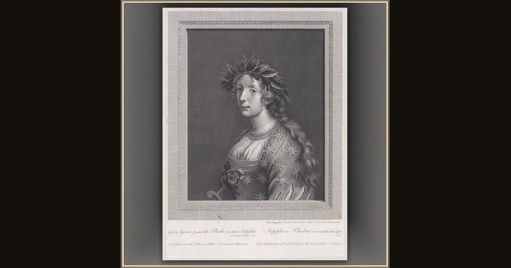

Sappho to Phoebus consecrates her lyre
Robert Strange, after Carlo Dolci · 1787 · met
Strange's engraving after Dolci shows Sappho crowned with laurel; her name appears in the hymn that calls on Aphrodite for help. (1) Explore its place in Sappho's Poems and Fragments, Fragments 1–2, section 1.